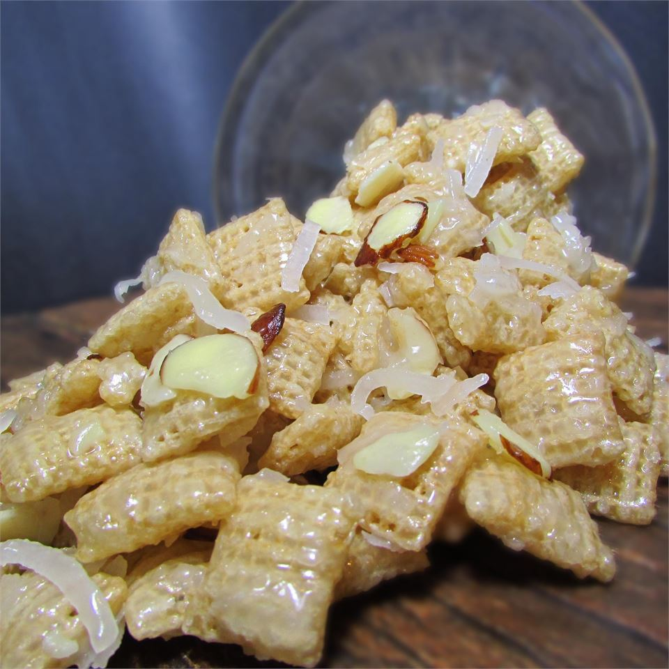

Heavenly Mix

Description
Two kinds of cereal, almonds and coconut combine to make a yummy, sweet snack mix.
482 calories; protein 4.3g; carbohydrates 75.4g; fat 19.7g; cholesterol 40.7mg; sodium 481.6mg.
Ingredients
- 2 cups butter
- 2 cups white sugar
- 2 cups corn syrup
- 1 (17.5 ounce) package crispy corn and rice square cereal
- 1 (17.5 ounce) package crispy rice cereal squares
- 1 ½ cups sliced almonds
- 1 cup sweetened flaked coconut
Steps
- In a large bowl or disposable roasting pan, toss together the corn and rice cereal, rice cereal, almonds and coconut.
- Combine the butter, sugar and corn syrup in a large saucepan and bring to a boil. Once boiling, continue to cook for 3 minutes. Pour over the cereals, using a large wooden spoon to stir the mixture until evenly coated. Spread out on a cookie sheet to cool. Store in an airtight container at room temperature.